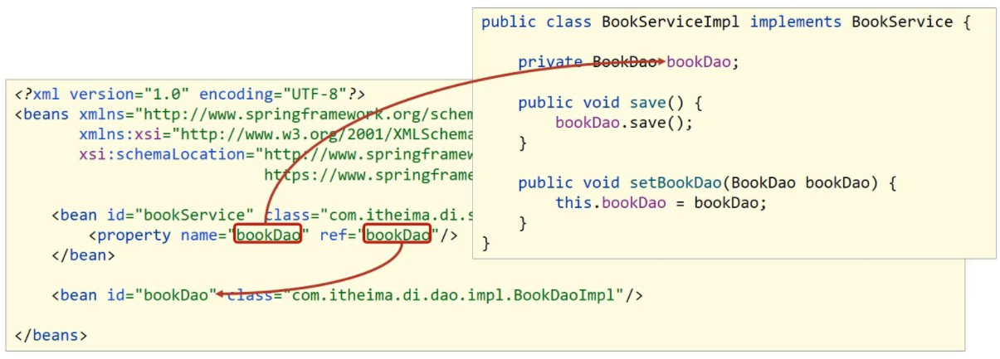

3. DI基础入门
DI入门
重要
思路分析
(1)要想实现依赖注入，必须要基于IOC管理Bean
DI的入门案例要依赖于前面IOC的入门案例
(2)Service中使用new形式创建的Dao对象是否保留?
需要删除掉，最终要使用IOC容器中的bean对象
(3)Service中需要的Dao对象如何进入到Service中?
在Service中提供方法，让Spring的IOC容器可以通过该方法传入bean对象
(4)Service与Dao间的关系如何描述?
使用配置文件
需求:基于IOC入门案例，在BookServiceImpl类中删除new对象的方式，使用Spring的DI完成Dao层的注入
1.删除业务层中使用new的方式创建的dao对象
private BookDao bookDao;
2.在业务层提供BookDao的setter方法
public void setBookDao(BookDao bookDao) { this.bookDao = bookDao; }
3.在配置文件中添加依赖注入的配置
<bean id="bookService" class="com.linzzz.service.impl.BookServiceImpl"> <!--配置server与dao的关系--> <!--property标签表示配置当前bean的属性 name属性表示配置哪一个具体的属性 ref属性表示参照哪一个bean --> <property name="bookDao" ref="bookDao"/> </bean>注意
注意:配置中的两个bookDao的含义是不一样的
name=”bookDao”中 bookDao 的作用是让Spring的IOC容器在获取到名称后，将首字母大写，前面加set找对应的 setBookDao() 方法进行对象注入
ref=”bookDao”中 bookDao 的作用是让Spring能在IOC容器中找到id为 bookDao 的Bean对象给 bookService 进行注入

4.运行程序调用方法
DI相关内容
注入
注入引用数据类型
需求:在bookServiceImpl对象中注入userDao
在BookServiceImpl中声明userDao属性
为userDao属性提供setter方法
在配置文件中使用property标签注入
声明属性并提供setter方法
public class BookServiceImpl implements BookService{ private BookDao bookDao; private UserDao userDao; public void setUserDao(UserDao userDao) { this.userDao = userDao; } public void setBookDao(BookDao bookDao) { this.bookDao = bookDao; } public void save() { System.out.println("book service save ..."); bookDao.save(); userDao.save(); } }配置文件中进行注入配置
<bean id="bookService" class="com.linzzz.service.impl.BookServiceImpl"> <property name="bookDao" ref="bookDao"/> <property name="userDao" ref="userDao"/>运行程序
注入简单数据类型
需求：给BookDaoImpl注入一些简单数据类型的数据
在BookDaoImpl类中声明对应的简单数据类型的属性
为这些属性提供对应的setter方法
在applicationContext.xml中配置
声明属性并提供setter方法
public class BookDaoImpl implements BookDao { private String databaseName; private int connectionNum; public void setConnectionNum(int connectionNum) { this.connectionNum = connectionNum; } public void setDatabaseName(String databaseName) { this.databaseName = databaseName; } public void save() { System.out.println("book dao save ..."+databaseName+","+connectionNum); } }配置文件中进行注入配置
<bean id="bookDao" class="com.linzzz.dao.impl.BookDaoImpl"> <property name="databaseName" value="mysql"/> <property name="connectionNum" value="10"/> </bean>注意
value:后面跟的是简单数据类型，对于参数类型，Spring在注入的时候会自动转换，但是不能写成
<property name="connectionNum" value="abc"/>否则spring在将 abc 转换成int类型的时候就会报错。
运行程序
注解
对于引用数据类型使用的是
<property name="" ref=""/>
对于简单数据类型使用的是
<property name="" value=""/>
构造器注入
需求:在BookServiceImpl使用构造函数注入多个引用数据类型，比如userDao
1.声明userDao属性
2.生成一个带有bookDao和userDao参数的构造函数
3.在applicationContext.xml中配置注入
删除setter方法并提供构造方法
public class BookServiceImpl implements BookService{ private BookDao bookDao; private UserDao userDao; public BookServiceImpl(BookDao bookDao,UserDao userDao) { this.bookDao = bookDao; this.userDao = userDao; } public void save() { System.out.println("book service save ..."); bookDao.save(); userDao.save(); } }配置文件中进行配置构造方式注入
<bean id="bookService" class="com.itheima.service.impl.BookServiceImpl"> <constructor-arg name="bookDao" ref="bookDao"/> <constructor-arg name="userDao" ref="userDao"/> </bean>注解
标签
constructor-arg中
name属性对应的值为构造函数中方法形参的参数名，必须要保持一致。
ref属性指向的是spring的IOC容器中其他bean对象。
<contructor-arg> 的配置顺序可以任意
运行程序
注意
当改构造器注入简单数据类型时，将ref改为value，其他操作与简单数据类型注入一样。
但当构造函数中方法的参数名发生变化后，配置文件中的name属性也需要跟着变，这两块存在紧耦合，具体该如何解决?

删除name属性，添加type属性，按照类型注入
<bean id="bookDao" class="com.itheima.dao.impl.BookDaoImpl"> <constructor-arg type="int" value="10"/> <constructor-arg type="java.lang.String" value="mysql"/> </bean>
删除type属性，添加index属性，按照索引下标注入，下标从0开始
<bean id="bookDao" class="com.itheima.dao.impl.BookDaoImpl"> <constructor-arg index="1" value="100"/> <constructor-arg index="0" value="mysql"/> </bean>
在实际使用中，注意以下几个事情：
强制依赖使用构造器进行，使用setter注入有概率不进行注入导致null对象出现 * 强制依赖指对象在创建的过程中必须要注入指定的参数
可选依赖使用setter注入进行，灵活性强 * 可选依赖指对象在创建过程中注入的参数可有可无
Spring框架倡导使用构造器，第三方框架内部大多数采用构造器注入的形式进行数据初始化，相对严谨
如果有必要可以两者同时使用，使用构造器注入完成强制依赖的注入，使用setter注入完成可选依赖的注入
实际开发过程中还要根据实际情况分析，如果受控对象没有提供setter方法就必须使用构造器注入
自己开发的模块推荐使用setter注入
总结
setter注入
简单数据类型
<bean...> <property name="" value=""/> </bean>
引用数据类型
<bean...> <property name="" ref=""/> </bean>
构造器注入
简单数据类型
<bean...> <constructor-arg name="" index="" type="" value=""/> </bean>
引用数据类型
<bean...> <constructor-arg name="" index="" type="" ref=""/> </bean>
自动配置
IoC容器根据bean所依赖的资源在容器中自动查找并注入到bean中的过程称为自动装配
自动装配方式有:
按类型（常用）
按名称
按构造方法
不启用自动装配
只需要修改applicationContext.xml配置文件即可:
(1)将 <property> 标签删除
(2)在 <bean> 标签中添加autowire属性
<!--autowire属性：开启自动装配，通常使用按类型装配-->
<bean id="bookService" class="com.itheima.service.impl.BookServiceImpl" autowire="byType"/>
注意
需要注入属性的类中对应属性的setter方法不能省略
被注入的对象必须要被Spring的IOC容器管理
按照类型在Spring的IOC容器中如果找到多个对象，会报
NoUniqueBeanDefinitionException
一个类型在IOC中有多个对象，还想要注入成功，这个时候就需要按照名称注入，配置方式为:
<!--autowire属性：开启自动装配，通常使用按类型装配--> <bean id="bookService" class="com.itheima.service.impl.BookServiceImpl" autowire="byName"/>
按照名称注入中的名称指的是什么?

bookDao是private修饰的，外部类无法直接访问，只能通过属性的set方法进行访问。对外部类来说，setBookDao方法名，去掉set后首字母小写是其属性名。（set的默认规则） 如果按照名称去找对应的bean对象，找不到则注入Null。当某一个类型在IOC容器中有多个对象，按照名称注入只找其指定名称对应的bean对象，不会报错。
对于依赖注入，需要注意一些其他的配置特征:
自动装配用于引用类型依赖注入，不能对简单类型进行操作
使用按类型装配时（byType）必须保障容器中相同类型的bean唯一，推荐使用
使用按名称装配时（byName）必须保障容器中具有指定名称的bean，因变量名与配置耦合，不推荐使用
自动装配优先级低于setter注入与构造器注入，同时出现时自动装配配置失效
集合注入
注入数组类型数据
- private int[] array;
<property name="array"> <array> <value>100</value> <value>200</value> <value>300</value> </array> </property>
注入List类型数据
- private List<String> list;
<property name="list"> <list> <value>itcast</value> <value>itheima</value> <value>boxuegu</value> <value>chuanzhihui</value> </list> </property>
注入Set类型数据
- private Set<String> set;
<property name="set"> <set> <value>itcast</value> <value>itheima</value> <value>boxuegu</value> <value>boxuegu</value> </set> </property>
注入Map类型数据
- private Map<String,String> map;
<property name="map"> <map> <entry key="country" value="china"/> <entry key="province" value="henan"/> <entry key="city" value="kaifeng"/> </map> </property>
注入Properties类型数据
- private Properties properties;
<property name="properties"> <props> <prop key="country">china</prop> <prop key="province">henan</prop> <prop key="city">kaifeng</prop> </props> </property>
注意
property标签表示setter方式注入，构造方式注入constructor-arg标签内部也可以写
<array>、<list>、<set>、<map>、<props>标签
List的底层也是通过数组实现的，所以
<list>和<array>标签是可以混用
集合中要添加引用类型，只需要把
<value>标签改成<ref>标签，这种方式用的比较少
注意区分map和properties的value的位置